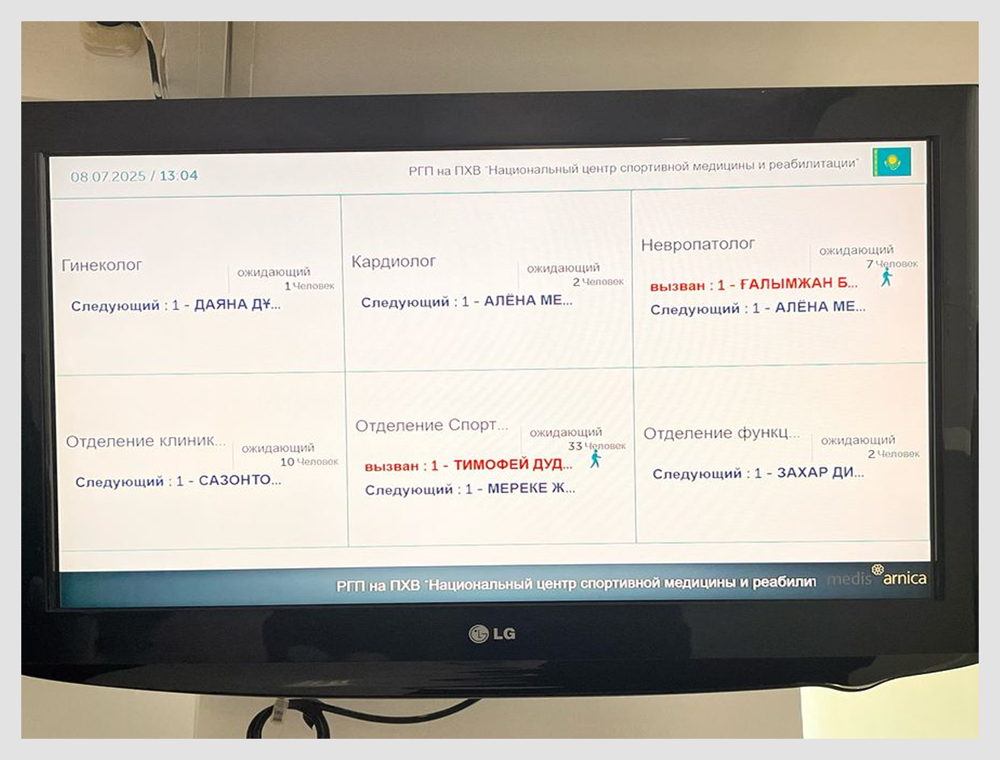
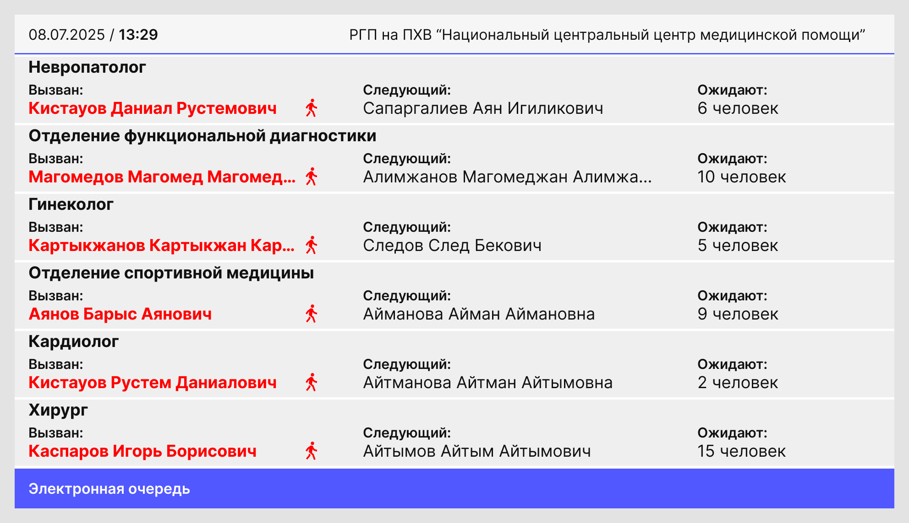
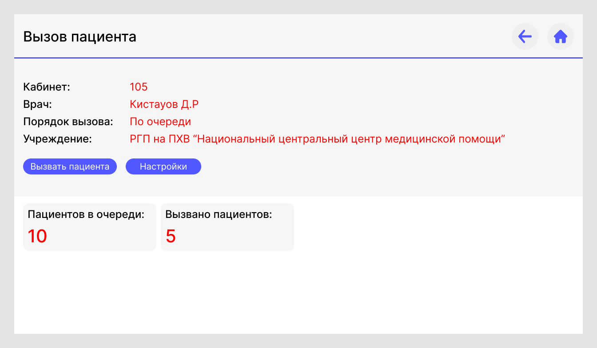
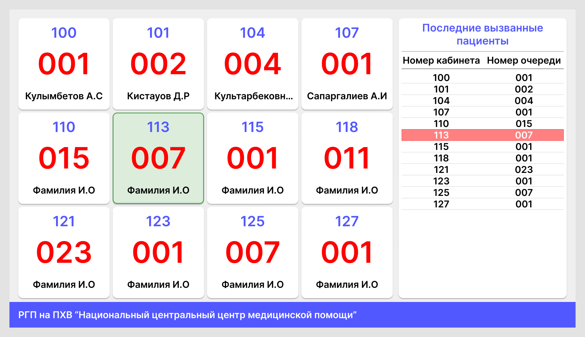
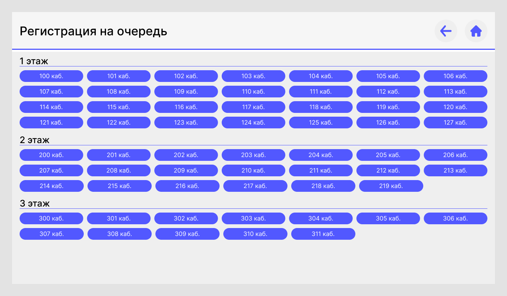

Galamat-Systems
Проектирование дизайна нового модуля электронной очереди.

О продукте
MIS Arnica — комплексная медицинская информационная система, охватывающая все процессы: от лаборатории и радиологии до кассовых модулей и детальной статистики.
Контекст
Действующий модуль электронной очереди перестал отвечать запросам пользователей.
Проблемы
- Низкая читаемость: Старая сетка (2 строки по 3 столбца) на ТВ-панелях не вмещала данные пациентов. Информация обрезалась, что создавало путаницу в коридорах.
- Функциональный разрыв: У медсестер отсутствовал инструмент для вызова пациента из интерфейса.
- Риск оттока: Неудобство системы ставило под угрозу продление контракта с текущим объектом.

Что в итоге сделал?
Основной задачей стало превращение «тупого» модуля отображения в полноценный инструмент управления потоком пациентов.
- Я полностью изменил верстку табло очереди. Переход от сетки к вертикальному списку на всю ширину экрана позволил сделать текст крупным и читаемым. Теперь статус «кто идет следующим» считывается мгновенно с любого расстояния.
- Модуль был приведен к единому дизайн-коду системы. Обновленная палитра и типографика не только освежили интерфейс, но и вписали его в общую экосистему обновленной МИС.
- Был разработан интерфейс для рабочего места медсестры. Это позволило автоматизировать процесс: медсестра видит список записанных в ее отделение и вызывает их одним кликом.
- Для нового объекта система была дополнена функционалом регистрации по кабинетам для выдачи талонов, что позволило адаптировать продукт под специфические бизнес-процессы заказчика.
Редизайн

Модуль медсестры
Был создан функциональный блок для рабочего места медсестры.

Масштабирование
Успешное обновление модуля позволило компании зайти на новый объект в Семее. Для этого заказчика система была дополнительно адаптирована:
- Вариативность отображения: Разработан альтернативный вариант интерфейса очереди, учитывающий специфику расположения экранов и архитектуру медицинского центра в Семее.
- Распределение потоков: Реализована логика выбора конкретных кабинетов/врачей.
- Печать талонов: Спроектирован интерфейс регистрации для выдачи талонов.



Выводы
Дизайн-решение, кажущееся на первый взгляд простым, оказало прямой эффект на бизнес-показатели:
- Retention (Удержание): Удалось сохранить контракт с крупным объектом в Алматы, закрыв их критическую «боль».
- Acquisition (Привлечение): Улучшенный модуль стал решающим фактором для привлечения нового клиента, которому требовалась гибкая настройка регистрации и отображения.
Даже в B2B-сегменте работа над удобством интерфейса — это не вопрос эстетики, а инструмент удержания клиентов и масштабирования продукта.